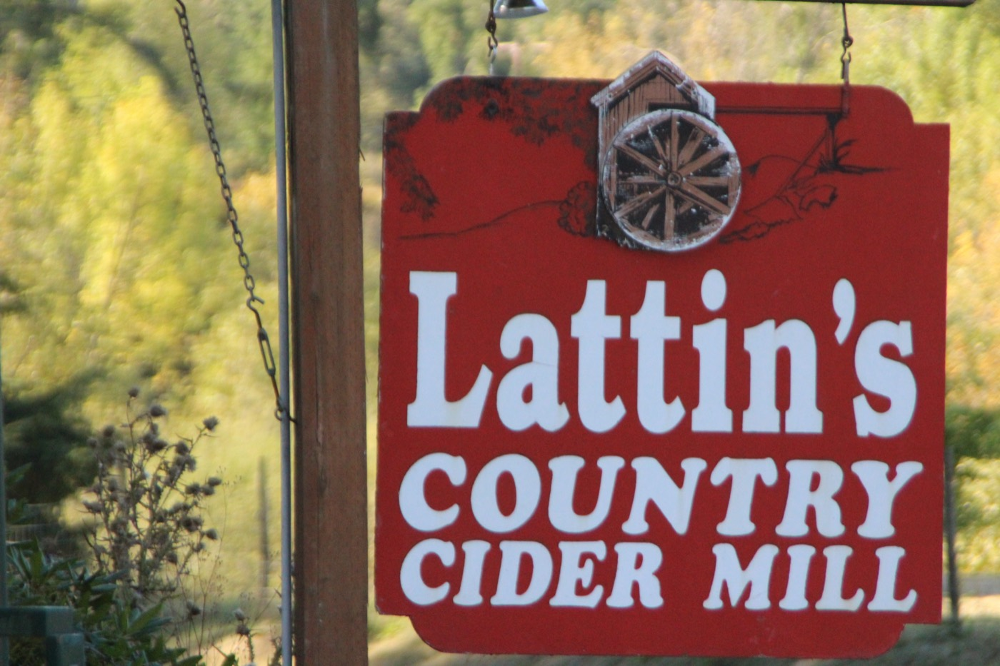
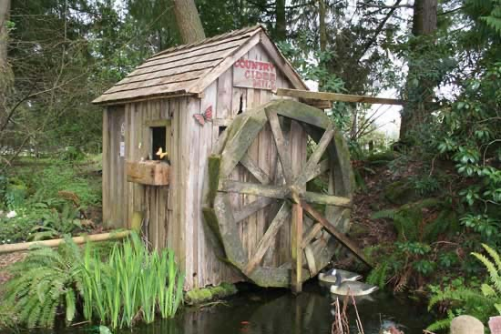
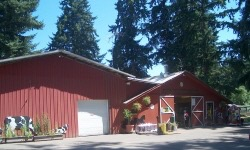
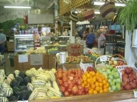
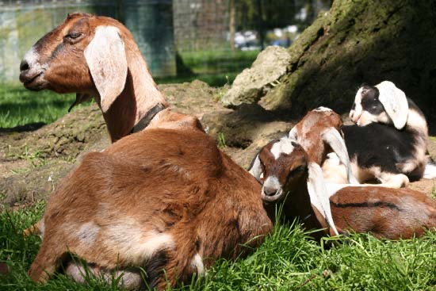

Farm store open all year
It tastes just like an apple.
Award-winning apple cider pressed on our farm, apple fritters, fresh pastries and a farm store full of Eastern Washington fruit. A small family owned farm south of Olympia, in business since 1976.

- Apple cider
- Apple fritters
- Cider donuts
- Eastern Washington fruit
- Farm fresh eggs
- Honey & jam
- Ready-to-bake pies
- Cider slushies
Country cider
Perfected since 1976, tested by taste.
“It tastes just like eating an apple, except you don’t have to chew.”
Our family likes things that work right every time. We buy apples directly from the same high quality growers every year and store them at a perfect 32 degrees so they are always crisp. Several varieties are mixed in just the right combination, and each batch is tested the old-fashioned way: we taste it.
We sort, cut and wash the apples by hand. It is time-consuming, but it keeps impurities out of the cider. The apples are ground and pressed, flash pasteurized and bottled immediately.
Award-winning apple cider. Our cider has won several national awards, including First Place at the North American Farmers Direct Marketing Association.
Why it wins
- Pressed only from Washington grown apples
- Each apple inspected and hand cut
- Cold pressed
- Unfiltered
- Flash pasteurized
- No sweeteners
- No concentrates
- No preservatives
Flavors
Sizes
Find it near you
Look for our Country Cider Mill brand in stores throughout Puget Sound and the Portland metro area: Snohomish, King, Thurston, Pierce and Kitsap counties in Washington, and Clackamas, Multnomah and Washington counties in Oregon. Don’t see it? Ask your grocer, then call us for a location near you.



The farm store
Open all year, baked fresh daily.
Our products are all homemade from natural ingredients, just like your grandmother used to make. Pick up a gallon of cider, then try the pastries and donuts, hot and cold ciders, and whatever fruit is in season.
- Award-winning apple cider
- Eastern Washington fruit & crisp apples
- Farm fresh eggs
- Fruit syrups, dried fruit, honey & jam
- Smoked salmon
- Johnson’s Smokehouse meat & cheese
- Frozen ready-to-bake pies
- Fresh seasonal fruit & produce
Apple fritter days: Thursday & Friday before noon, and all day Saturday & Sunday.
We use our own cider in the pie sauce for our apple pies, in cider donuts, apple fritters, cider slushies, apple sweet bread and cider smoothies (half ice cream, half berry cider).
A day in the country
Bring the family to the farm.
Wander the flower and vegetable gardens, have a picnic and feed the animals. Kids love the play area with its wooden fence maze, open all year.

Apple Festival & Pumpkin Patch
Tractor-drawn wagon rides to the pumpkin patch, the wooden maze, food and drinks.

Farm animals
Meet the goats and sheep on the farm, and visit the chickens and ducks.
Egg hunt & winter lights
Kids love our Easter Egg Hunt, and in December the farm turns into a Winter Wonderland with thousands of lights.
Visit & contact
Come see us on Rich Road.
Farm store hours
Apple fritters: Thursday & Friday before noon, all day Saturday & Sunday.
Good to know